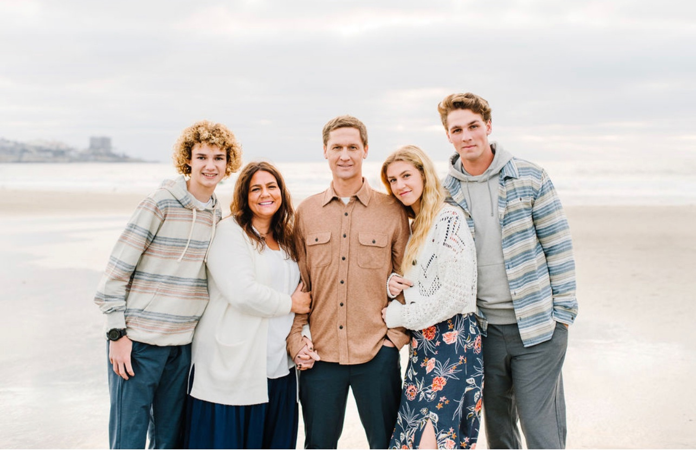

Family is my number one priority. They are one of the greatest blessings in my life. Learning and leadership are my passions. Everyday I look for opportunities to serve the people around me and make their life easier in some way. Growth is the greatest accomplishment someone can achieve in their day. Whether in mind, strength, or spirit, growth is what makes or breaks a person. I strive to be better everyday.
The outdoors and nature are where I feel some of the greatest growth occurs. I enjoy a challenge and am unrelenting when it comes to problem solving. As soon as I find an answer for myself I look for people who are still searching. I work well with a team and try to lift up every one of my teammates. I've been placed in many leadership roles and thrive in the enviroment and under pressure.
